Águas
Nesta área o nosso foco é proporcionar aos nossos clientes facilidade na aquisição de equipamentos para melhoramento da qualidade de água e a respectiva medição. Para tal apresentamos soluções tecnológicas inovadoras e acessíveis.
O nosso diferencial nesta área destaca-se na disponibilização de diversos equipamentos para a monotorização, analise e medição de qualidade de água: Caudalimetros para controlo de perdas, Contadores pré-pagos e kits de corte, Contadores mecânicos, Data Loggers, Telemetria, Instrumentação, Monitorização de Recursos Hídricos, Equipamento para controlo da qualidade da água, Sistemas de tratamento de águas desinfeção, Dessalinizadoras e ETARs.
Nossos Produtos
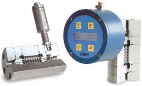
Caudalimetros controlo de perdas
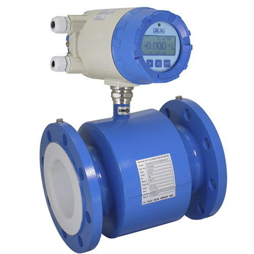
Contadores pré-pagos e kits de corte
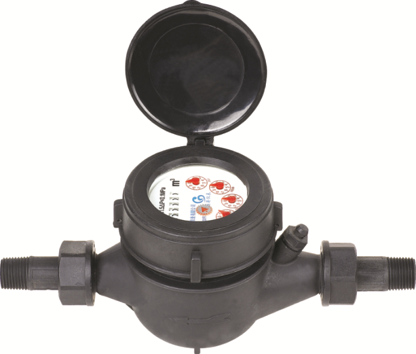
Contadores mecânicos
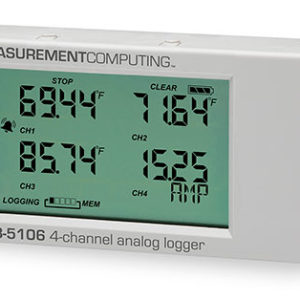
Data loggers
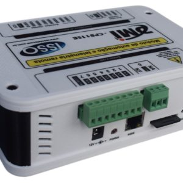
Telemetria
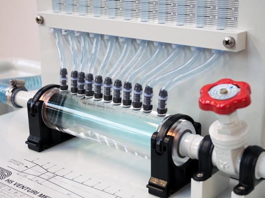
Instrumentação
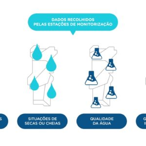
Monitorização de recursos hídricos
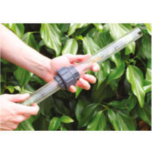
Qualidade da Água
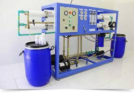
Dessalinizadoras
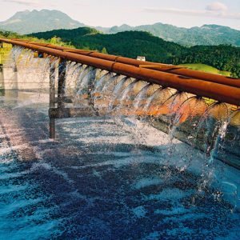
Sistemas de tratamento de água
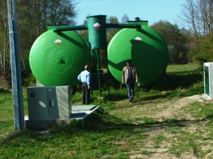
ETARs – Estações de Tratamento
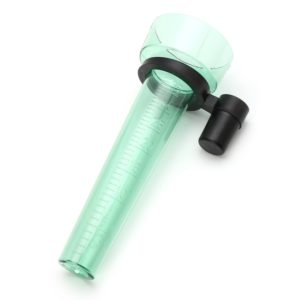
Medidor de nível e precipitação
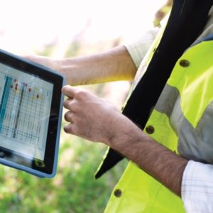